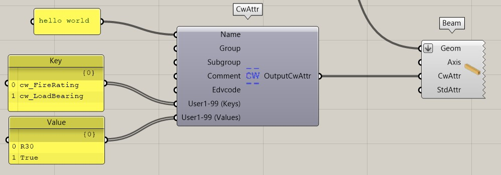
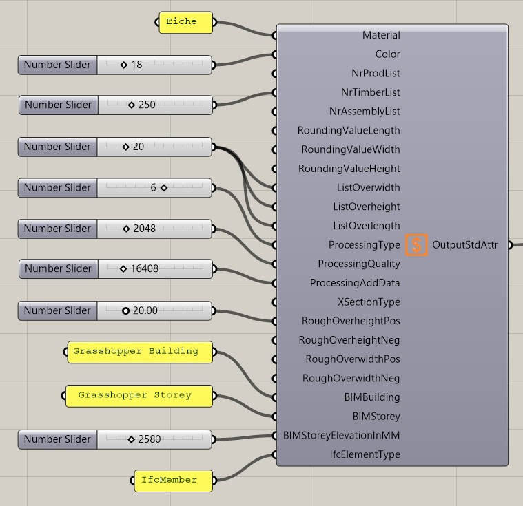
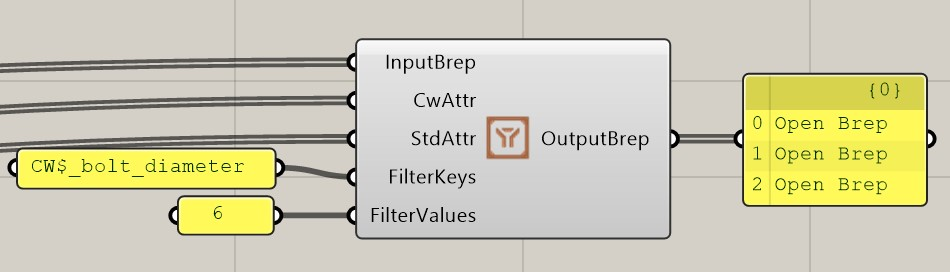
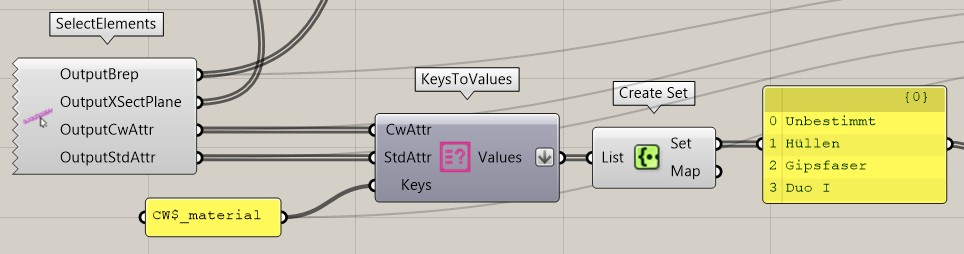
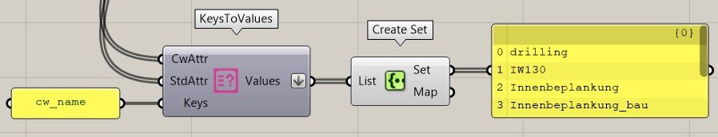

Attributes
User Attributes
Il est possible de créer des attributs utilisateur pour les éléments cadwork. Ceux-ci peuvent être ajoutés comme paramètres d'entrée.

| Input |
comment |
| Name |
String |
| Group |
String |
| Subgroup |
String |
| Comment |
String |
| Edvcode |
String |
| User1-99 (Keys) |
String
Le nom de l'attribut doit exister dans cadwork.
Pour créer l'attribut via Grasshopper, il faut le faire précéder du préfixe cw_. |
| User1-99 (Values) |
String |
| Output |
comment |
| OutputStdAttr |
Retour des attributs cadwork créés |
Standard Attributes

| Input |
Rückgabewert |
| Matériau |
Nom du matériau |
| Color |
numéro de couleur |
| NrProdList |
Numéro de liste de production |
| NrTimberList |
Numéro de nomenclature |
| NrAssemlbyList |
Numéro de liste de montage |
| RoundingValueLength |
Valeur d'arrondi longueur [mm] |
| RoundingValueWidth |
Valeur d'arrondi largeur [mm] |
| RoundingValueHeight |
valeur d'arrondi hauteur [mm] |
| ListOverwidth |
Largeur brute [mm] |
| ListOverheight |
hauteur brute [mm] |
| ListOverlength |
Longueur brute [mm] |
| ProcessingType |
Type de sortie |
| ProcessingQuality |
Qualité de traitement |
| ProcessingAddData |
Paramètres supplémentaires |
| RoughOverheightPos |
Axe de hauteur positif [mm] |
| RoughOverheightNeg |
Axe de hauteur négatif [mm] |
| RoughOverwidthPos |
Axe de largeur positif [mm] |
| RoughOverwidthNeg |
Axe de largeur négatif [mm] |
| BIMBuilding |
Bâtiment |
| BIMStorey |
Étage |
| BimStoreyEleveationInMM |
Hauteur de l'étage en [mm] |
| IfcElementType |
IfcType (par ex. IfcMember) |
| Output |
comment |
| OutputCwAttr |
Retour des attributs cadwork créés |
Filter by Attribute
Les Brep's peuvent être filtrés via ce composant selon des clés/valeurs définies.

| Input |
comment |
| InputBrep |
Brep's |
| CwAttr |
Attribut de cadwork |
| StdAttr |
Attribut standard |
| FilterKeys |
Filter Keys
Respecter l'orthographe
 CW$_foo_bar CW$_foo_bar |
| FilterValues |
Valeur selon laquelle le filtrage doit être effectué |
| Output |
comment |
| OutputBrep |
Restitution de la brep filtrée |
Keys to Values
Récupérer les valeurs d'attributs selon des clés données.
Filtre sur les attributs standard

Filtre sur les attributs de l'utilisateur

| Input |
comment |
| CwAttr |
Attribut de cadwork |
| StdAttr |
Attribut standard |
| Keys |
Clé selon laquelle le filtrage doit être effectué
Respecter le préfixe!
StdAttr CW$_
CwAttr cw_ |
| Output |
comment |
| OutputBrep |
Restitution de la brep filtrée |
Working with Standard Attributes
Output Standard-Attributes
| Name |
Rückgabewert |
| CW$_material |
String |
| CW$_color |
Integer |
| CW$_number_production_list |
Integer |
| CW$_number_timber_list |
Integer |
| CW$_number_assembly_list |
Integer |
| CW$_rounding_value_width |
Real |
| CW$_rounding_value_height |
Real |
| CW$_rounding_value_length |
Real |
| CW$_list_overwidth |
Real |
| CW$_list_overheight |
Real |
| CW$_list_overlength |
Real |
| CW$_processing_type |
Integer |
| CW$_processing_quality |
Integer |
| CW$_processing_add_data |
Integer |
| CW$_xsection_type |
Integer |
| CW$_rough_overheight_pos |
Real |
| CW$_rough_overheight_neg |
Real |
| CW$_rough_overwidth_pos |
Real |
| CW$_rough_overwidth_neg |
Real |
| CW$_BIMBuilding |
String |
| CW$_BIMStorey |
String |
| CW$_IfcElementType |
String |
ProcessingType
| Nom |
Numéro (Integer) |
| Pas de type de sortie |
0 |
| Chevron |
1 |
| Panne |
2 |
| Schifter |
3 |
| Madrier |
4 |
| Tige |
6 |
| Fermes |
7 |
| Arêtier/chevron de noue |
11 |
| Utilisateur 1 |
20 |
| Utilisateur 2 |
21 |
| Utilisateur 3 |
22 |
| Utilisateur 4 |
23 |
| Utilisateur 5 |
24 |
| Niveau |
30 |
| Panneau 1 |
120 |
| Panneau 2 |
121 |
| Panneau 3 |
122 |
| Panneau 4 |
123 |
| Panneau 5 |
124 |
ProcessingQuality
| Nom |
Numéro (Integer) |
| None |
0 |
| Kerve |
1 |
| Veille cardiaque |
2 |
| Feuille |
4 |
| Feuille de faîtage |
8 |
| Coup de tanière |
16 |
| Décalage |
32 |
| Perçage |
64 |
| Profilé |
128 |
| Fente |
256 |
| Coffrage de larmier |
512 |
| Lame de crochet |
1024 |
| Rainure frontale |
2048 |
| Rainure SS intérieure |
4096 |
| Rainure SS extérieure |
8192 |
| Coupe hexagonale |
16348 |
| RabotageTotal |
32768 |
ProcessingAddData
| Nom |
Numéro (Integer) |
| Aucun |
0 |
| Edition ESZ seul |
16393 |
| Sortie ESZ mur |
16396 |
| Référence Conteneur |
16408 |
| Pont multifonctionnel |
16424 |
| Macro bois rond en BVN |
16904 |
| Usinage dans l'élément de construction individuel |
16520 |
| Ignorer pour VBA |
18440 |
| Tous |
19133 |
XSectionType
| Name |
Nummer (Integer) |
comment |
| Chaussure transversale carrée. |
1 |
|
| Section rectangulaire |
2 |
|
| Coupe transversale ronde |
3 |
|
| Plaque rectangulaire |
17 |
|